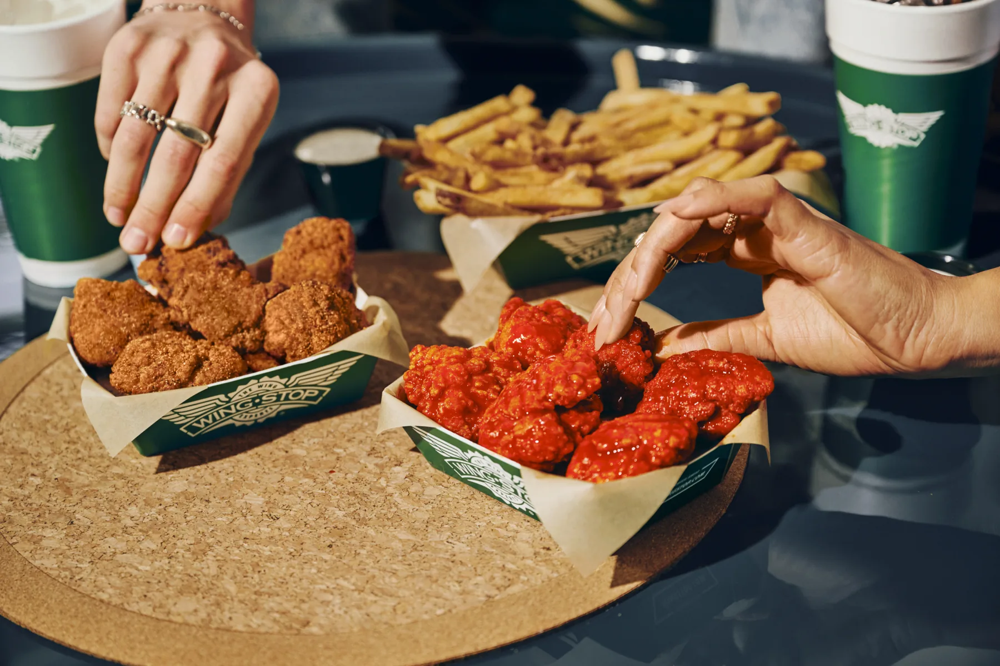

ORDERING GUIDE
High-Protein Wingstop Orders: Build a Better Meal

A high-protein Wingstop order is not simply the largest combo. Chicken supplies the protein; fries, loaded sides, dips and sugary drinks can enlarge the meal without adding comparable protein.
Protein-First Rules
- Choose chicken before the combo.
- Compare total protein and calories.
- Breading and sauces change the meal.
- Count every side, dip and drink.
Classic vs. Boneless vs. Tenders
Classic wings include skin and bone; boneless wings and tenders use breaded white meat. Tenders provide larger pieces, boneless wings simplify portioning, and classic wings suit lower-carb priorities. Compare exact portions in current nutrition data.
Flavor Still Counts
Sauces and rubs alter calories, carbohydrates and sodium. Dry does not automatically mean lighter. Use the flavor guide for taste, then official data for numbers.
Three Builds
Classic
Eight or 10 classic wings, veggie sticks and water.
Tenders
A tender order with one flavor, one measured dip and no automatic loaded-side upgrade.
Group
Prioritize chicken count and use one shared side.
Sides and Drinks
Veggie sticks create the lightest contrast. Water or an unsweetened drink avoids calories without protein. See the sides guide.
FAQ
Which item has the most protein?
It depends on serving size. Compare the exact current portion, not the product name alone.
Protein goals related to a medical condition or athletic plan should be discussed with a qualified professional.